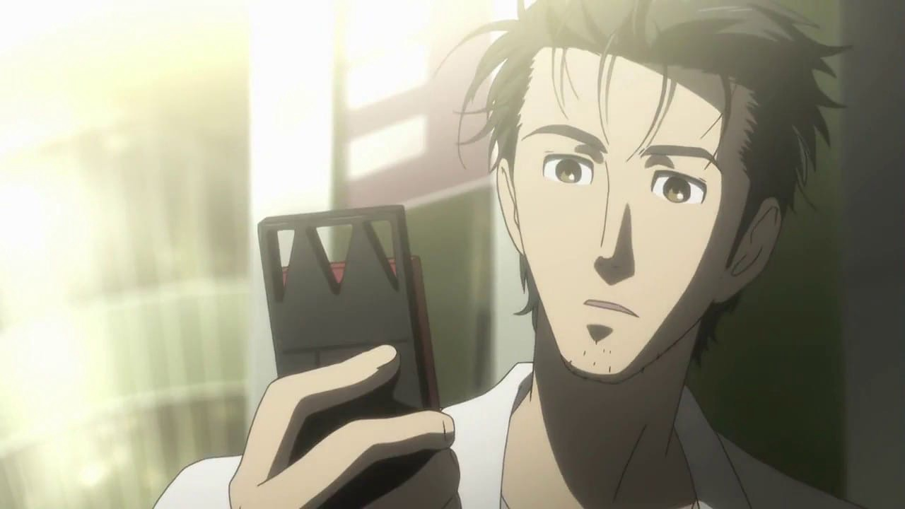
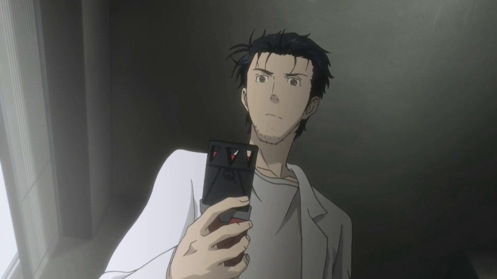
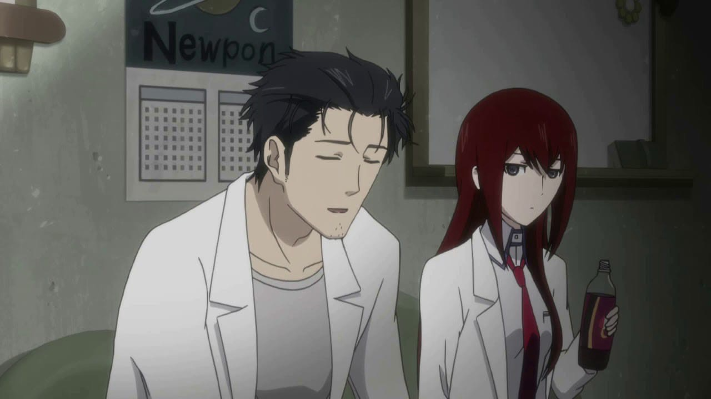
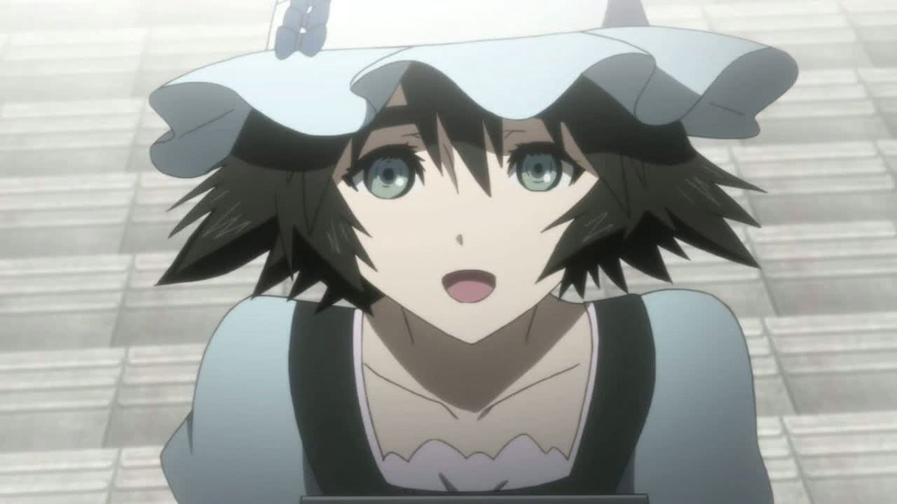
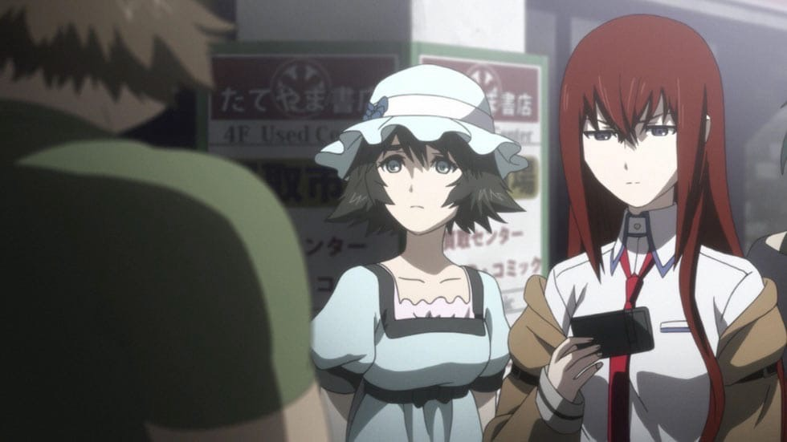
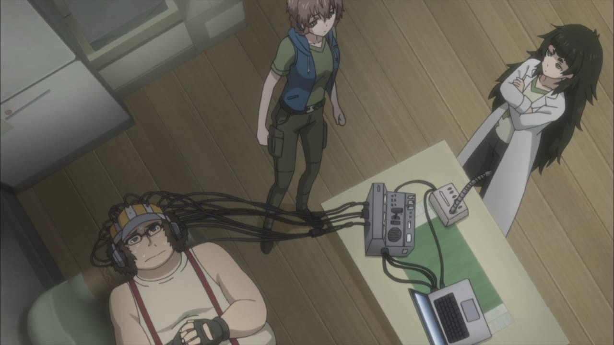

Окабе Ринтаро
он же Окарин, (комбинация Ока- из фамилии и Рин- из имени) самопровозглашенный безумный ученый и главный протагонист Steins;Gate. Окабе — напыщенный и эксцентричный человек, которому присущи некоторые черты цундере. Он самопровозглашенный безумный ученый, настоящее имя которого “Темный Феникс” (Hououin Kyouma). Этим именем Окабе часто представляется перед другими. Но, к его огорчению, большинство просто не обращают на это внимания и зовут его “Окарин”. Также, сам он, по факту, никого не называет настоящими именами, в особенности Курису, у которой есть сразу несколько прозвищ, которые раздражают её в разной степени. 
Макисе Курису
Девушка-гений, закончившая университет в семнадцать лет. Она занимается исследованиями памяти человека, и за свои достижения получила признание в научном сообществе. Она присоединяется к Лаборатории Гаджетов будущего как ЛабМем 004 после нескольких стычек с Окабе Ринтаро. Курису показана разумной и зрелой девушкой, которая обычно спокойна и собрана даже в напряжённых ситуациях. Но, тем не менее, по ходу сюжета раскрывается её робкая сторона. Окабе и Дару часто называют её цундере, хотя ей это не нравится. Курису реалистка до мозга костей, ей трудно поверить, в то что, по её мнению, не может существовать, как, например, было с Мобиловолновкой. Окабе даже попросил Дару взломать СЕРН, чтобы доказать ей возможность существования машины времени. Маюри Шиина
подруга детства главного героя, Окабе Ринтаро. Она учится в старших классах и подрабатывает в мэйд-кафе "May Queen Nyan-nyan", а в свободное время занимается изготовлением костюмов для косплея. По словам Окабэ, Маюри всегда немного отличалась от других людей. Со стороны она выглядит несколько инфантильно, т.к. часто проявляет ребячество, простодушие и детскую наивность. Маюри — одна из наименее эрудированных членов лаборатории, но нельзя сказать, что она глупа. Может что-то недопонимать или понимать неправильно, но иногда её помощь или советы бывают довольно полезны для остальных членов лаборатории. По Маюри явно заметно, что она социально неадаптированная. Это может объяснить её странное поведение. Возможно, причина связана с тем, что Маюри долго не могла оправиться от смерти своей бабушки. Тем не менее, именно она заботится о своем друге Окабэ. 
Хашида Итару
Умелый хакер, разбирающийся не только в программном, но и в аппаратном обеспечении, ЛабМем 003. Дару очень хорошо разбирается в компьютерах и программировании, настолько, что может взламывать мейнфреймы секретных организаций и разбираться в машинном коде.
Он хорошо управляется с IBN 5100, но из-за низких знаний английского, он не смог ничего разобрать в информации, которую добыл с помощью него. Так же, как и Окабе, ему нравится создавать Гаджеты Будущего, но в нем нет такого же энтузиазма, и он даже предлагал продать их за небольшие деньги. У Дару особая манера придумывания названий для созданных устройств: он всегда добавляет случайные номер модели и версии в конце названия. 